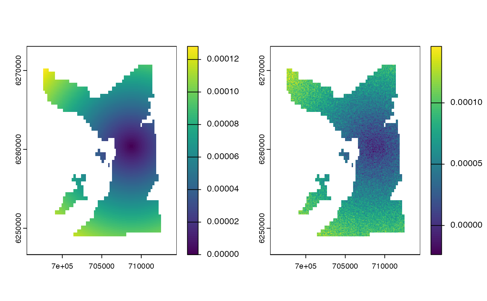

These functions are standard model skill metrics. In patter, they support comparisons of simulated and reconstructed patterns of space use.
Usage
skill_mb(.obs, .mod, .summarise = "mean")
skill_me(.obs, .mod, .summarise = "mean")
skill_rmse(.obs, .mod)
skill_R(.obs, .mod)
skill_d(.obs, .mod)Arguments
- .obs
The 'observed' (true) pattern of space use, as a
terra::SpatRaster.- .mod
The 'modelled' (reconstructed) pattern of space use, as a
terra::SpatRaster.- .summarise
A function, passed to
terra::global(), used to summariseterra::SpatRastervalues.
Details
We follow the mathematical definitions in Lavender et al. (2022) Supplementary Information Sect. 3.2.1.
skill_mb()computes mean bias (if.summarise = "mean").skill_me()computes mean error (if.summarise = "mean").skill_rmse()computes root mean squared error.skill_R()computes Spearman's rank correlation coefficient.skill_d()computes the index of agreement.
These functions are not memory safe. On Linux, they cannot be used within a Julia session.
References
Lavender, E. et al. (2022). Benthic animal-borne sensors and citizen science combine to validate ocean modelling. Sci. Rep. 12: 16613. https://www.doi.org/1038/s41598-022-20254-z
See also
To simulate observations, see
sim_*()functions (especiallysim_path_walk(),sim_array()andsim_observations());To translate observations into coordinates for mapping patterns of space use, see:
coa()to calculate centres of activity;pf_filter()and associates to implement particle filtering algorithms;
To estimate utilisation distributions from simulated data and algorithm outputs, use
map_*()functions (seemap_pou(),map_dens()andmap_hr());
Examples
if (patter_run(.julia = FALSE, .geospatial = TRUE)) {
set.seed(123L)
# Generate hypothetical 'observed' utilisation distribution
obs <- terra::setValues(dat_gebco(), NA)
obs[24073] <- 1
obs <- terra::distance(obs)
obs <- terra::mask(obs, dat_gebco())
obs <- obs / terra::global(obs, "sum", na.rm = TRUE)[1, 1]
# Generate hypothetical modelled' distribution
mod <- obs
mod[] <- mod[] + rnorm(n = terra::ncell(mod), mean = 0, sd = 1e-5)
mod <- terra::mask(mod, dat_gebco())
mod <- mod / terra::global(mod, "sum", na.rm = TRUE)[1, 1]
# Visualise 'observed' versus 'modelled' distributions
pp <- par(mfrow = c(1, 2))
terra::plot(obs)
terra::plot(mod)
par(pp)
# Calculate skill metrics
skill_mb(mod, obs)
skill_me(mod, obs)
skill_rmse(mod, obs)
skill_R(mod, obs)
skill_d(mod, obs)
}

#> [1] 0.8416201